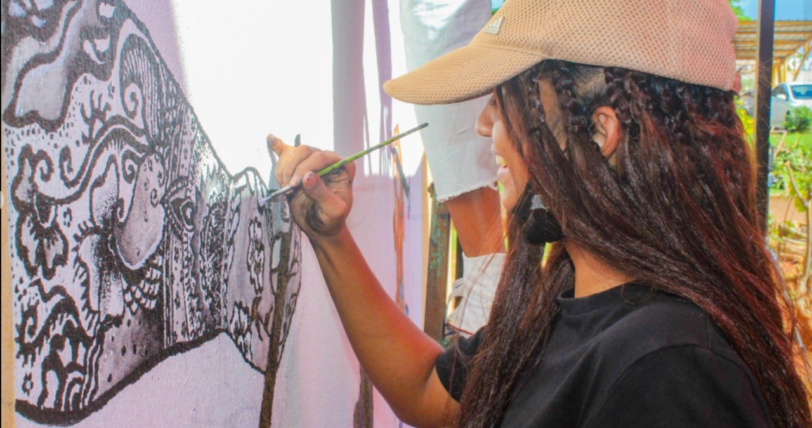

Hello and welcome to my portfolio! Navigate through the web page to discover my general information, my work journey and skills.
My name is Seedam Gemma. I live at L'Escalier, found in the southern region of Mauritius. I am turning 23 years old this year.
I am currently student in the Software Engineering field at Universite des Mascareignes, and I will be completing my dregree in a few months. I am looking forward to find a job soon!
I consider myself as being a skillful person. Competencies I got that I think would suit any type of job are good communication, active listening, team spirit and leadership, good adaptability, good working ethics, reposible and trustworthy, and many more.
Some important skills I have, that I think would be suitable for the IT world are:I love working on myself constantly to acquire more and more skills. I am confident to be able to do any job I have been given!
I was responsible of the shop. I had to take care of the shop in terms of cleaning and cooking pizza, paninis and burgers. I had to greet people, recommend clients for food and be the cashier.
I was responsible of the shop. I had to keep the shop clean, and check for expiry dates of products. I had to cook foods like paninis and sandwiches. I was responsible for the shop stock and was also the cashier.
My job was to find Assurance clients in France through calls. I had to explain to them the advantages they would have and take their details if ever they wanted to benefit from the Insurance.
It consisted of manufacturing ballons for catheters used during operations in hospitals.
The main goal of this internship was to learn about the role of different departments.
I had to create documentations, checklists and road maps. I was formed on Dayforce, Salesforce, Power Apps, Power BI, Power Auto mate and many others. I had to mainly use resources over the internet to learn how to do things i did not know how to do.
| Year | Certification | Location |
|---|---|---|
| 2014 - 2016 | School Certificate(SC) | Loreto College of Mahebourg |
| 2017-2020 | Higher School Certicate(HSC) | Loreto College of Mahebourg |
| 2020-2023 | BSc(Hons) Software Engineering | Loreto College of Mahebourg |
| Certification | Location |
|---|---|
| Kiltiv to Knoesans | Lions Club Ebene |
| Our Nation | Junior Achievemet Mascareignes |
| Mauritius Athletic Association | IAAF Global Athletics |
| Internet and computing Core Ceritification(IC3) Programme | National Computer Board(NCB) |
| National Story Writing Competition | ICAC |
| Concours de Langage Francais | Alliance Francaise |
| Foundation MS Office Application | ICL(Innovative and Creative Learning) |
| Anti-Corruption-Global, Policy Central, Cybersecurity, among many others | Ceridian |
I hope you found my Portfolio interesting and hope it meets your job specifications. I am at your disposal for any additional information, and stay open an interview where I would be able to share my motivations. You can find my contact points on the section just below. Thank you!
You can send me an instant message. You just have to click on the send message button NOW!